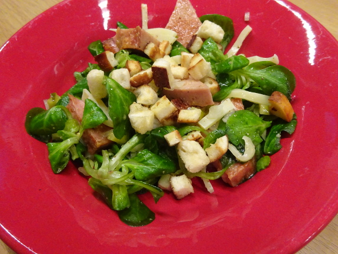

Bayrischer Feldsalat

- Zubereitung: ca. 30 Minuten
- Für 4 Personen
Zutaten
- 150 g Edamer
- 4 Gewürzgurken
- 400 g Feldsalat
- 300 g Leberkäse
- 1 Zwiebel, klein
- 3 EL Weißweinessig
- 2 EL Senf, süßer
- 4 EL Öl
- 2 Laugenbrötchen
- 2 EL Butter
Zubereitung
- Den Käse in Streifen schneiden, die Gurken klein würfeln. Den Feldsalat waschen, putzen und trockenschleudern. Leberkäse in Dreiecke schneiden. Die Zwiebel abziehen und fein würfeln.
- Essig mit 2 EL Wasser, süßem Senf, Salz und Pfeffer verrühren. 3 EL Öl unter das Dressing schlagen. Die Laugenbrötchen in feine Würfel schneiden.
- Feldsalat mit Käse, Gurken und Zwiebeln vermischen. Die Butter in einer Pfanne erhitzen, Brötchenwürfel darin anbraten, anschließend herausnehmen. Das restliche Öl (1 EL) hineingeben und die Leberkäsdreiecke darin knusprig braun braten. Dressing
über den Salat geben, Leberkäse hinzufügen und alles mischen. Die Croutons darüberstreuen und den Salat servieren.